authors
- treyperry
maintainers
- treyperry
contributors
- justingood : 3 commits
- treyperry : 11 commits
- sivel : 1 commits
- bcoca : 1 commits
- twmartin : 1 commits
total issue counts
feature pull request: 3
pullrequest: 11
docs pull request: 2
bugfix pull request: 5
feature idea: 1
issue: 3
new plugin: 1
bug report: 2
issue history
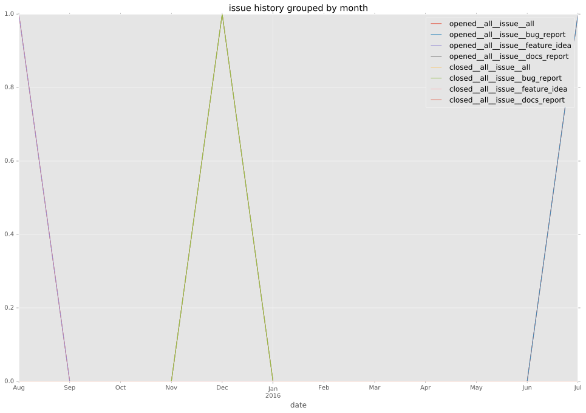
pullrequest history
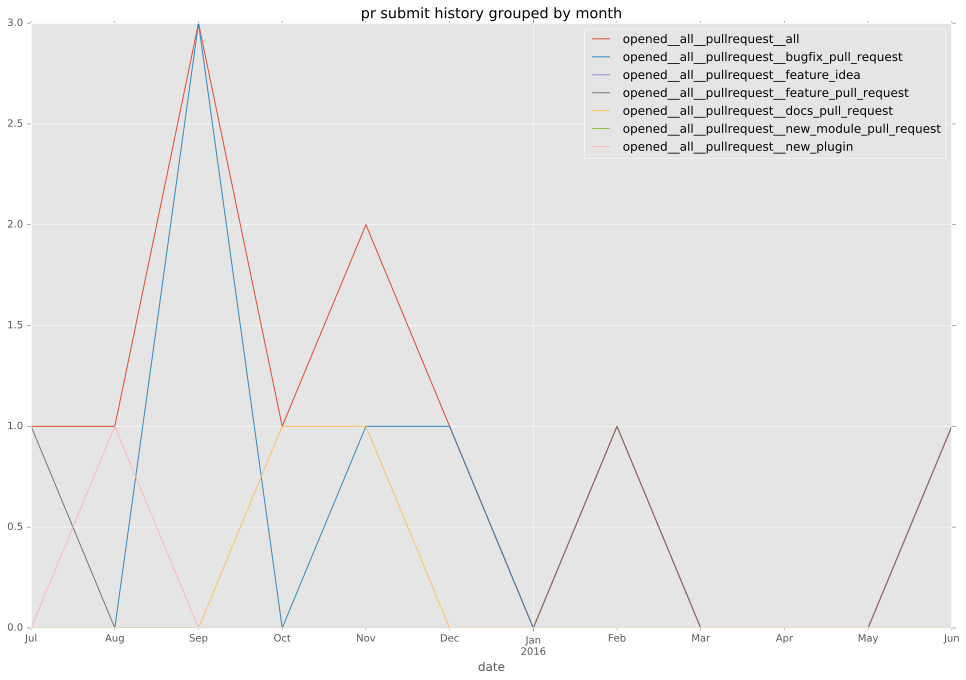
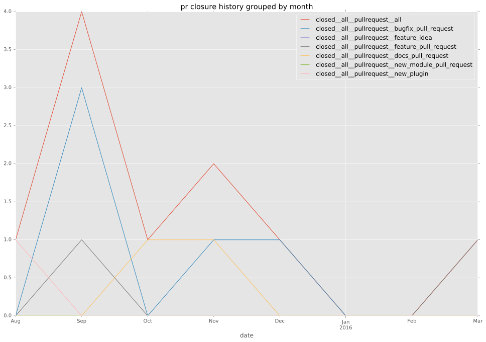
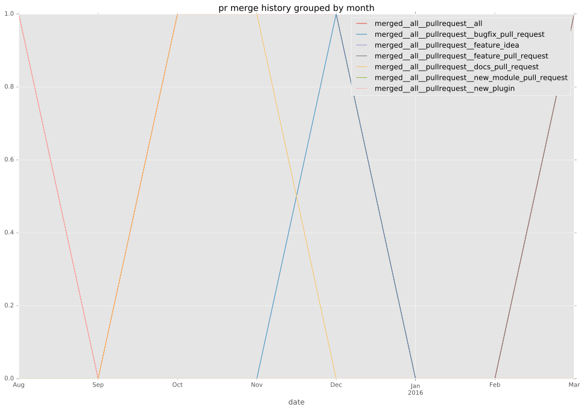
days open by issue type
bugfix pull request
count: 6
std: 1.36626010213
min: 0
max: 3
median: 2.0
mean: 1.66666666667
all
count: 16
std: 17.90902938
min: 0
max: 58
median: 2.0
mean: 9.75
pullrequest
count: 0
std: nan
min: nan
max: nan
median: nan
mean: nan
docs pull request
count: 4
std: 0.0
min: 0
max: 0
median: 0.0
mean: 0.0
feature pull request
count: 3
std: 11.5470053838
min: 38
max: 58
median: 38.0
mean: 44.6666666667
feature idea
count: 0
std: nan
min: nan
max: nan
median: nan
mean: nan
issue
count: 0
std: nan
min: nan
max: nan
median: nan
mean: nan
new plugin
count: 2
std: 0.0
min: 5
max: 5
median: 5.0
mean: 5.0
bug report
count: 1
std: nan
min: 2
max: 2
median: 2.0
mean: 2.0
closures grouped by total days open
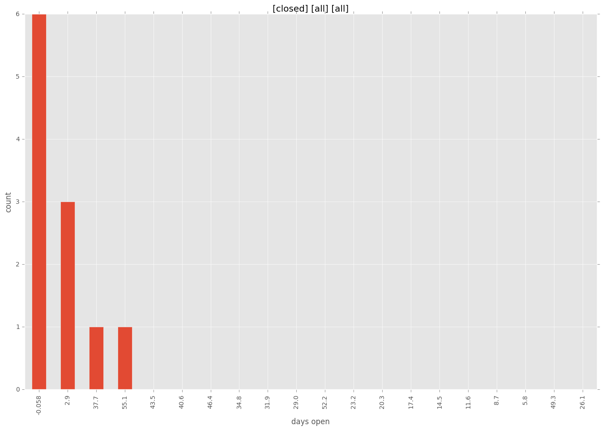
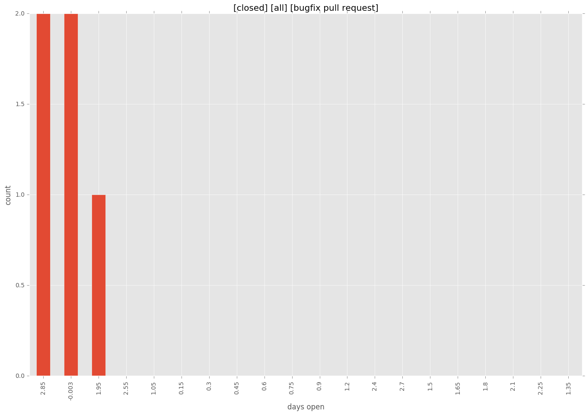
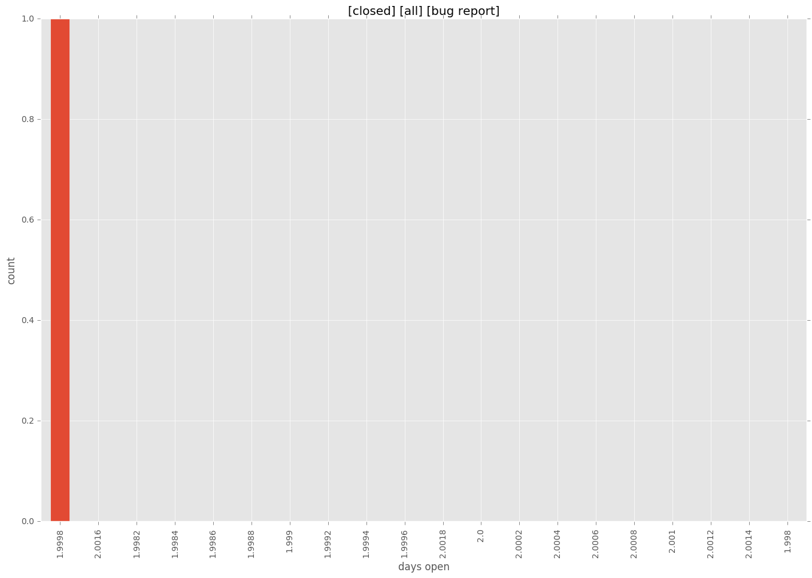

 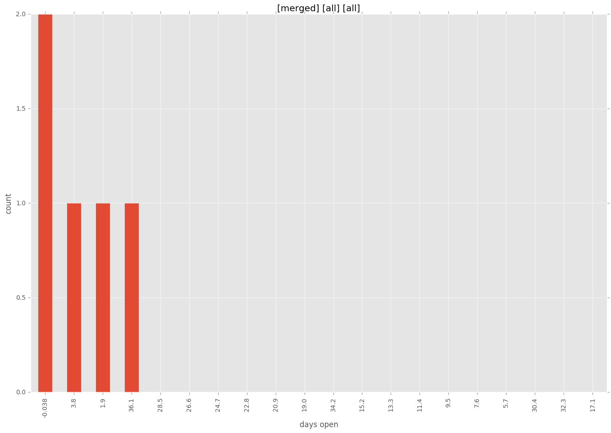
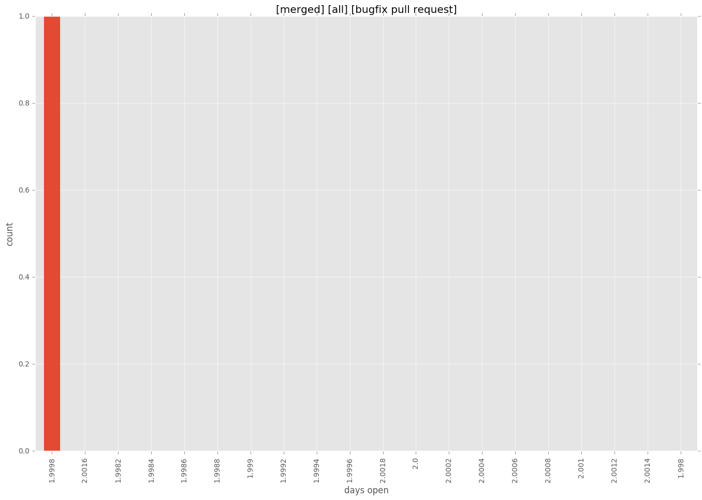
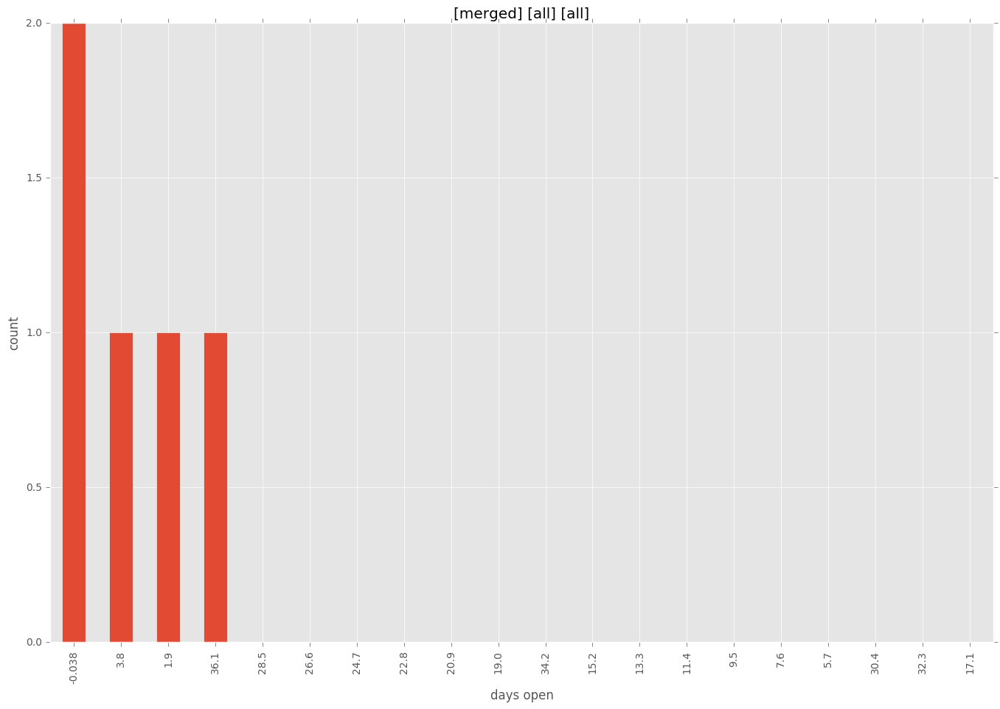
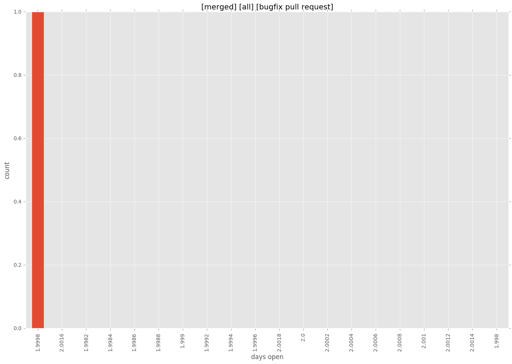